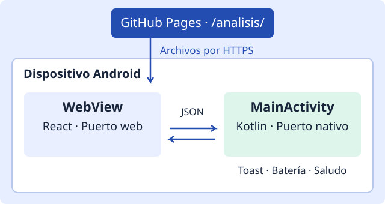
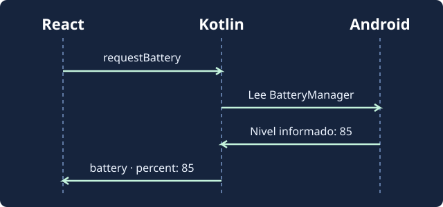

Cómo construir el puente
GitHub Pages sirve la aplicación React por HTTPS. En el teléfono, Kotlin aloja esa página dentro de un WebView y conserva los controles nativos en la misma pantalla. El tráfico HTTP descarga los archivos web. Los mensajes del puente viajan dentro de la app por un canal entre Kotlin y JavaScript.

1. Kotlin abre el análisis y crea el canal
La actividad carga /analisis/ con loadUrl. Cuando termina de cargar la URL esperada, createWebMessageChannel() crea dos puertos conectados. Kotlin guarda uno y transfiere el otro a React. El origen HTTPS que se pasa a postWebMessage limita qué página puede recibir el puerto.
private const val WEB_ORIGIN = "https://toastlink.cafeycodigo.org"
private const val START_PAGE = "$WEB_ORIGIN/analisis/"
webView.loadUrl(START_PAGE)
// Dentro de connect(), al terminar de cargar START_PAGE
val (nativePort, reactPort) = webView.createWebMessageChannel()
port = nativePort
// Kotlin instala aquí el callback de nativePort.
webView.postWebMessage(
WebMessage("toastlink:connect", arrayOf(reactPort)),
Uri.parse(WEB_ORIGIN)
)2. React confirma que puede recibir mensajes
El evento inicial incluye un puerto en event.ports[0]. React registra un manejador en ese puerto y envía {"type":"ready"}. Kotlin habilita el saludo nativo y devuelve otro ready. React habilita sus botones cuando recibe esa respuesta. En un navegador normal la página muestra el análisis con los controles nativos desactivados.
window.addEventListener("message", (event) => {
if (event.data !== "toastlink:connect" || event.ports.length !== 1) return;
const port = event.ports[0];
port.onmessage = ({ data }) => {
const response = JSON.parse(data);
if (response.type === "ready") setConnected(true);
};
port.postMessage(JSON.stringify({ type: "ready" }));
});El ejemplo reúne en un bloque los pasos que la app reparte entre el receptor del puerto y el efecto de React.
3. Sigue una consulta de batería de principio a fin

- Al pulsar Consultar batería, React marca la operación como pendiente y envía
{"type":"requestBattery"}. - Kotlin recibe el texto, lo convierte en un
JSONObjecty elige la operación por el campotype. BatteryManagerdevuelve el nivel. Kotlin acepta valores entre 0 y 100 y mandanullsi el dato no está disponible.- React recibe, por ejemplo,
{"type":"battery","percent":85}, limpia el estado pendiente y muestra el porcentaje en la interfaz y el registro.
val percent = getSystemService(BatteryManager::class.java)
?.getIntProperty(BatteryManager.BATTERY_PROPERTY_CAPACITY)
?.takeIf { it in 0..100 }
sendToReact("battery", "percent", percent ?: JSONObject.NULL)requestAndroid("requestBattery");
// En el receptor del puerto, para type === "battery"
const result = percent === null ? "No disponible" : `${percent} %`;
setBattery(result);
setBatteryPending(false);4. Reutiliza el canal para el toast y el saludo
- React → Kotlin
{"type":"showToast","message":"Hola desde React"}. Kotlin recorta el texto, descarta los mensajes vacíos y llama aToast.makeText(...).show().- Kotlin → React
{"type":"toastShown"}. React anota la confirmación en el registro.- Kotlin → React
{"type":"greeting","message":"Hola desde Kotlin"}. El botón nativo envía el mensaje por el mismo puerto y React actualiza el último saludo.
Para ver el recorrido completo, abre el análisis desde ToastLink en Android y compara cada acción con las entradas del registro.
Abrir el análisis